Where does Bengaluru end?
500 years of a city on a 5.8 metre wall. A movable touch screen becomes a lens that brings each memory back in colour, and visitors earn the right to design the city's future.
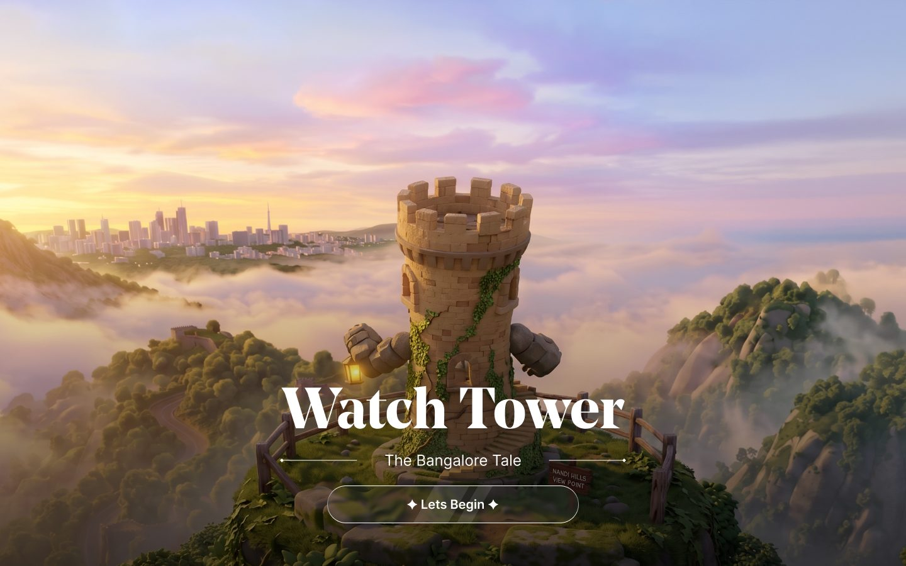
Solo designer. Research, content strategy, UX, UI, interaction, creative direction and a working front-end prototype.
7 days for the assignment (30 Oct to 6 Nov 2026), then 2 days of refinement.
Design assignment for DVSI, an experience design studio in Bengaluru. Brief: a Digital Slider experience for an experience centre.
Figma, three.js, GSAP, Claude (agentic coding), Figma MCP, Playwright, GitHub Pages.
The short version
A 5800 × 1400 mm printed timeline with a 55" touch screen that slides along it. It has to work for a passer-by in 5 seconds and a curious visitor for 10 minutes.
Cut 36 milestones down to 8 stops. Designed the screen as a colour lens over a grey archive, a stamp passport that turns exploring into a mission, and a 2037 finale where visitors build their own Bengaluru.
A working, shareable 3D experience that people open with no briefing. 9 versions in one week, with AI as a fast build partner and every design call kept with me.
milestones filtered into stops
versions, from 2D prototype to 3D build
mid-fidelity wireframes to fix the story
stamps that unlock the future
review-and-refine loops on the live build
A physical installation, simulated on the web
The brief asked for a large-format timeline graphic and the UI for a movable touch screen that acts as a window into the story. I chose my own city, Bengaluru, which turns 500 in 2037. Reviewers would only see it on a laptop, so the installation also had to feel real inside a browser.
5800 × 1400 mm, about 4:1. Must read on its own from 3 m.
55" portrait, 1080 × 1920 px. Touch targets in the lower two thirds.
The wall is about 8.5 screen widths long, so 8 stops.
Idle, sliding, arrived, deep dive and timeout, planned before any screen.
Who it is for, what works, and what to cut
Bengaluru has clear eras and a built-in arc: green, then grey, then digital. The 500th birthday gives the installation a reason to exist, the same way anniversaries drove the best precedents I studied.
Two audiences, one experience
The wall is for people in the experience centre. The website is what reviewers and everyone else actually open. I paired each wall visitor with the web visitor who behaves the same way, so one design decision serves both.
Locals, 20 to 45, often in tech. Want to see their city in a new light.
Opens a link a friend shared. Wants the same surprise, on a laptop or phone.
Surprising facts, places they know, a narrator with humour. A Share button so the link travels.
Moved here for work. Wants to understand where they live.
Has never been to Bengaluru. Knows nothing about Kempe Gowda or Lalbagh.
Plain language and no assumed local knowledge. Every stop explains itself in one line.
Delegates and tourists. Want a quick, impressive overview.
Has 2 minutes between meetings. Decides fast whether to keep going.
A cinematic landing and one signature moment, the colour lens, inside the first drag.
School and college visits. Learn together, while having fun.
Designers and students who want to see how it was made.
How it works, the wall view with real dimensions, story pages and this case study.
Passing by or waiting. Needs a hook before anything else.
Opens the link with no context or briefing.
One line from the Watchtower, coach marks with a clear Next, and a cursor that says Drag.
What the best sliding screens do
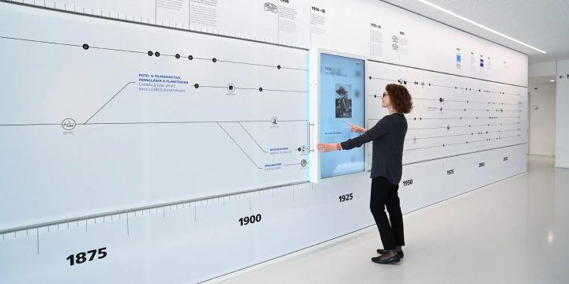
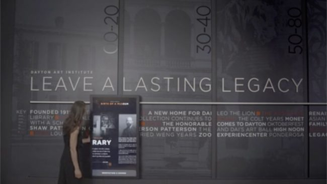
Takeaways
- Animate the printZEISS
- Move to navigateZEISS
- Reframe the briefDayton
- Two threadsDayton
- Explore headerDVSI
- The art continuesDVSI
What I learnt
- Give a reason to slide
- One metaphor ties it together
- The anniversary is the hook
- Design for watchers too
- Content as data (CMS)
- Speakers allow a voice
What not to do
- Screen copies the wall
- Walls of text and specs
- Future split from the story
- Dead screen, no invite
- Built for one user only
- All dates given equal weight
36 milestones to 8 stops
I listed every milestone from c. 890 to 2037 and ran three filters, one question each. Press Play, or step through, and watch the list shrink.
Start: everything that ever happened.
Principles I designed against
The wall reads alone from 3 m
A year and one object per stop. Five seconds to get it.
The screen is a lens, not a copy
Grey archive outside, colour inside. The slide itself tells the story.
Learn by doing
No manual, no menu to read. Every control teaches itself on first use.
Colour is the reward
The interface stays quiet so the restored memories carry the colour.
One voice
The Watchtower narrates in first person, and is honest about being a narrator.
Effort earns the future
Stamps unlock 2037, and 2037 is something you build, not something you read.
HOW MIGHT WE · 01How might we give a passer-by a reason to touch the screen at all?
HOW MIGHT WE · 02How might we make moving the screen feel like uncovering, not scrolling?
HOW MIGHT WE · 03How might we end a history timeline with a decision, not a full stop?
Meera, 10 minutes, no briefing
Design lead at an experience studio, opening the link between meetings. The line traces how she feels at each step.
Intrigued
Oriented
Surprised
Hooked
Engaged
In control
Proud
Delighted
Convinced
Nine versions in one week
Each version ended with something I noticed, and that observation set the next version. Drag the divider to compare the first prototype with the final build.
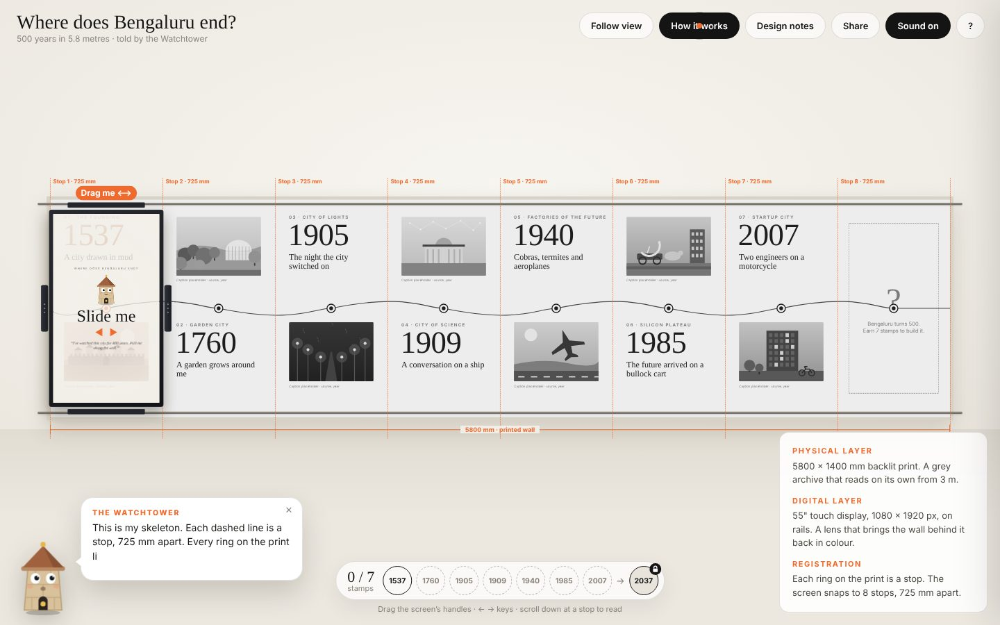
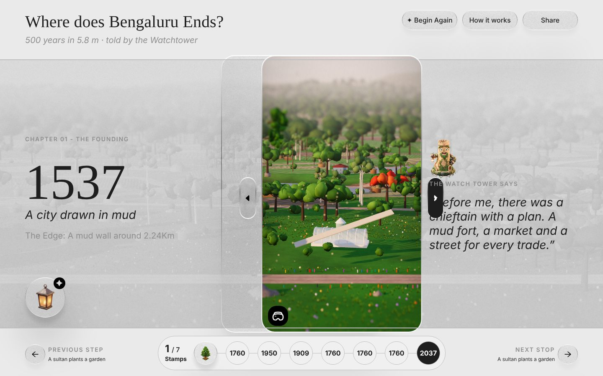
v1 · 30 Octv9 · finalProve the slide before adding content
- What I did
- A 2D prototype: drag the screen on rails with weight and momentum, snap to the nearest stop, colour inside the screen.
- Why
- If the slide feels cheap, no story will save it. Separating mechanics from content kept the topic swappable.
- What I noticed
- On a laptop the screen is 12% of the wall. So I added a Follow view that locks the camera to the screen.
A guide, hooks and a reward
- What I did
- Added the Watchtower as a guide, a "next stop" teaser, stamps to collect and a 2037 city builder. Removed Then & Now.
- Why
- No briefing means the guide teaches by doing. Building the future gives a feeling of "I did something".
- What I noticed
- The goal was unclear. 8 stops and 7 stamps did not add up, and cards competed with the wall.
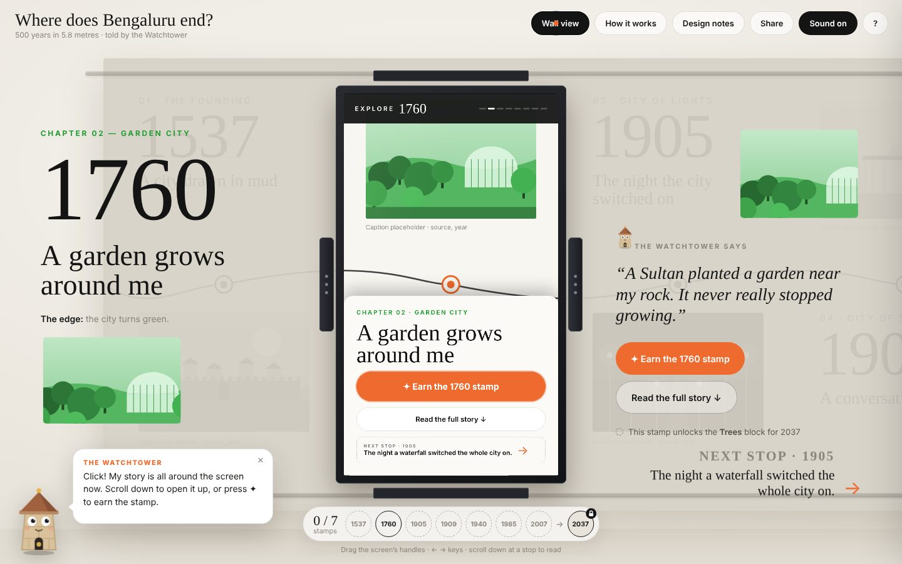
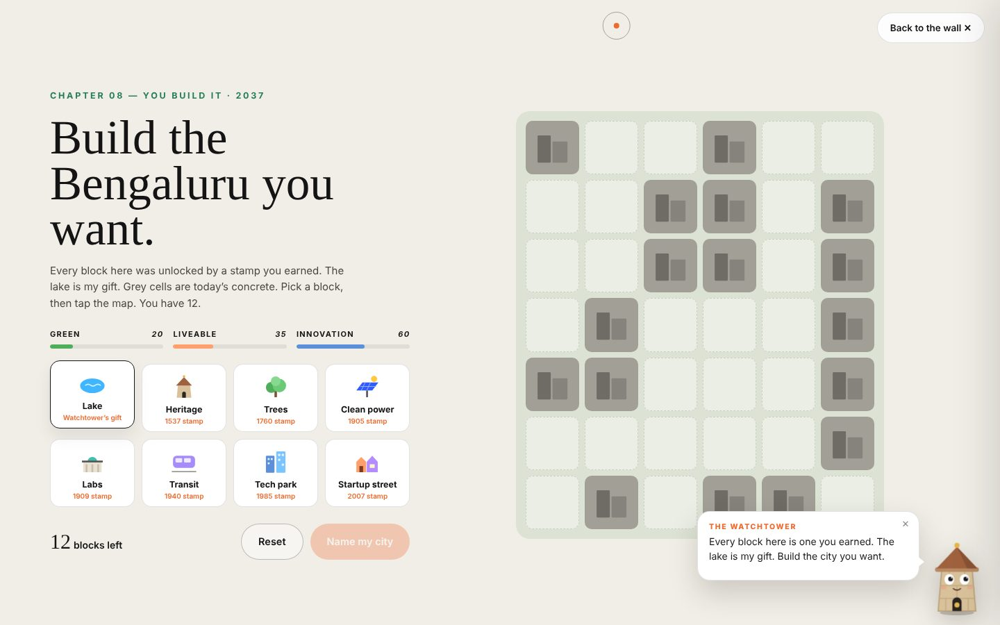
Stop coding, fix the story in wireframes
- What I did
- 12 mid-fidelity wireframes: a mission briefing, a stamp bar on every screen, a locked 2037 that lists what is missing.
- Why
- Wireframes are faster to change than code. 2037 became the reward, not a stop, so 7 stamps finally add up.
- Decision
- Web frame 1440 × 900 for reviewers, with the real 1080 × 1920 screen inside at one third scale.
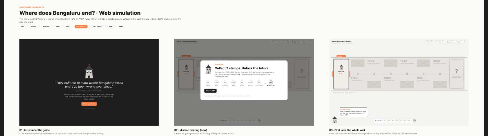
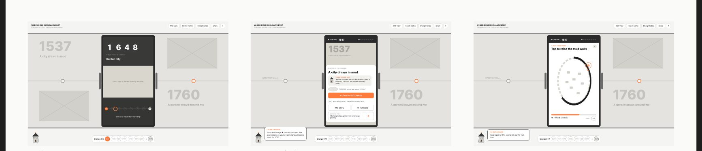
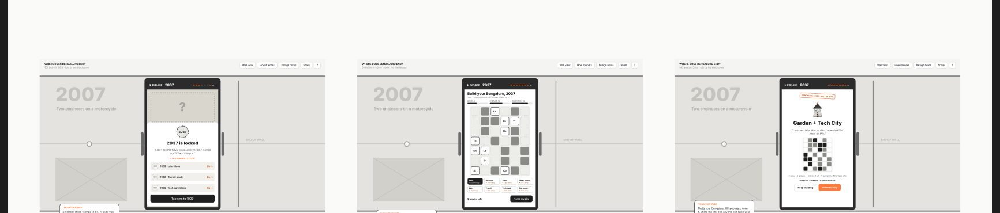
From photo cards to one object per year
- Tried
- Photo cards on a wavy timeline. It read like a blog, not an installation, and the frame had nothing to reveal.
- Then
- A 3D miniature world: each year shows only the year and one hero object. Sliding the frame builds the memory around it.
- What I noticed
- Stamps came just by arriving, so they felt empty. And the look was not my visual language yet.
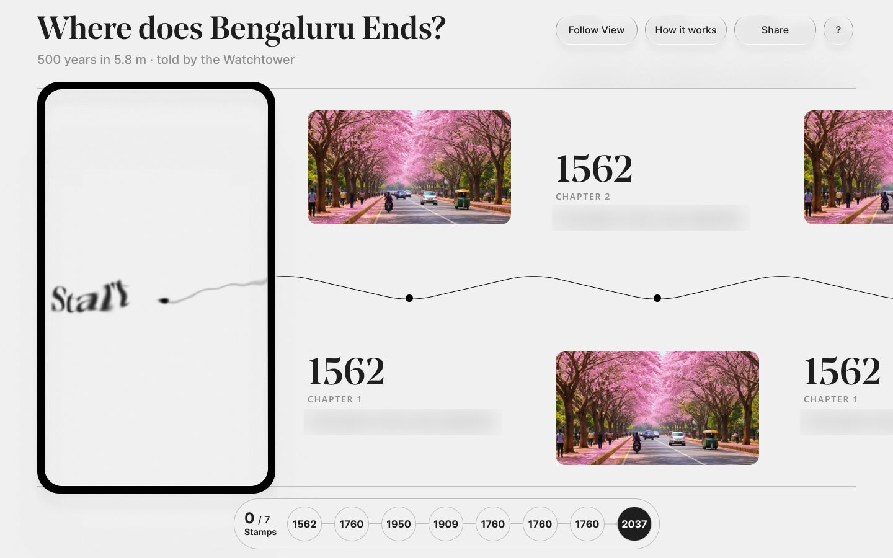
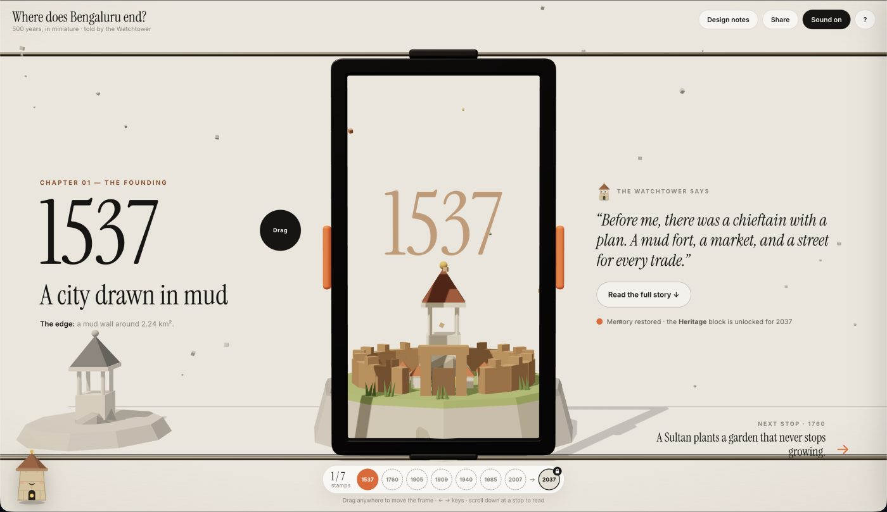
My own UI, then onboarding
- What I did
- Redesigned every screen in Figma: a cinematic landing, a glass frame with side handles, a stamp passport, a full story page and coach marks.
- Why
- The first impression decides if Meera stays. A calm grey world lets colour in the frame stand out.
- What I noticed
- Many controls at once: nav, handles, VR, stamps, lantern. That led to a skippable step-by-step walkthrough.
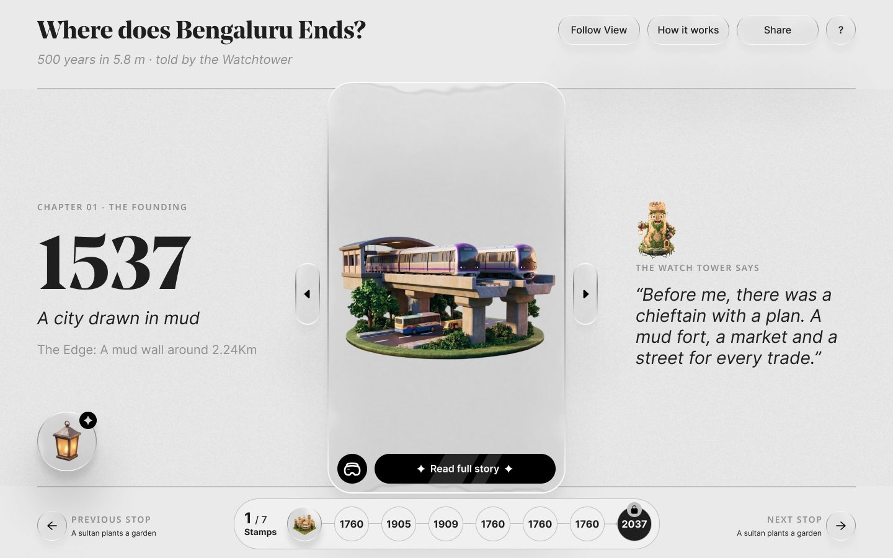
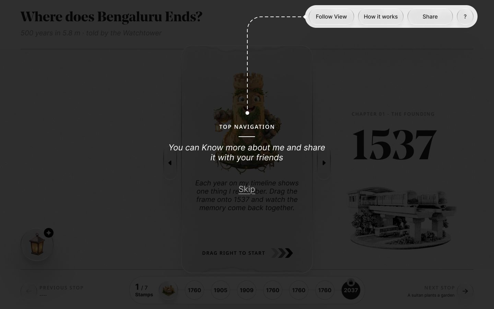
Final build from my Figma screens
- What I did
- Built the web app straight from Figma at 1440 × 900, with golden-hour 3D scenes that come alive when the frame lands.
- Then
- Reviewed it like a creative director, one comment at a time: hero scale, CTA states, the 2037 reward, VR, cursor and wayfinding.
- Result
- One shareable link runs the whole journey, from landing to building and walking your own 2037.
What changed from first to final
| Area | First version | Final | Why |
|---|---|---|---|
| Wall at rest | Year, headline, photo and caption | Year and one 3D object | Must read from 3 m in 5 seconds |
| The frame | A screen that shows content | A lens that rebuilds the memory as you slide | The slide becomes the story |
| Goal | 8 stamps, loosely explained | 7 stamps unlock building 2037, stated up front | It did not add up |
| Deep dive | Story, Then & Now, In numbers | One full story page, plus Open in VR | Then & Now added no value |
| Guidance | Speech bubbles | Coach marks plus an assistant you can ask | More controls needed a real introduction |
| 2037 | A grid you fill in | Your plan as a 3D city you can walk in VR | The reward should feel like yours |
A grey archive, with colour you earn
The interface is almost colourless, like an old photograph. Colour only comes from the memories you restore.
Typography
Colour click a swatch to copy
Collect the 7 stamps tap each one
The mechanic in miniature. Each stamp starts grey and earns its colour. The 2037 button stays locked, and its tooltip tells you exactly what is missing.
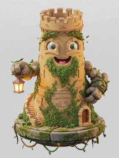
The WatchtowerHover or tap the locked button to hear from the Watchtower.
The Watchtower talks like an old friend
First person, warm, a little witty. One scene per line, and every line ends with something to do.
“They built me to mark where Bengaluru would end. I've been wrong ever since.”The Watchtower · opening line
Key moments, and the thinking behind each
Slide to remember
Each year shows one object in grey. Drag the frame over it and the full scene rebuilds in colour, tied to how far you slide. Let go and it snaps to the nearest stop.
Watch the stamp bar too: the year you are on gets a ring and a dot, live while you slide.
A cursor that names the gesture
Two quiet circles by default. Over the frame arrows, the centre dot grows into a black disc that says Drag, so the main interaction explains itself.
Move your mouse onto the frame arrow
The full story, then step inside
Each stop opens into a chapter page with an index and a note on the history. It ends with two clear choices: go back to the timeline, or open the scene in VR.
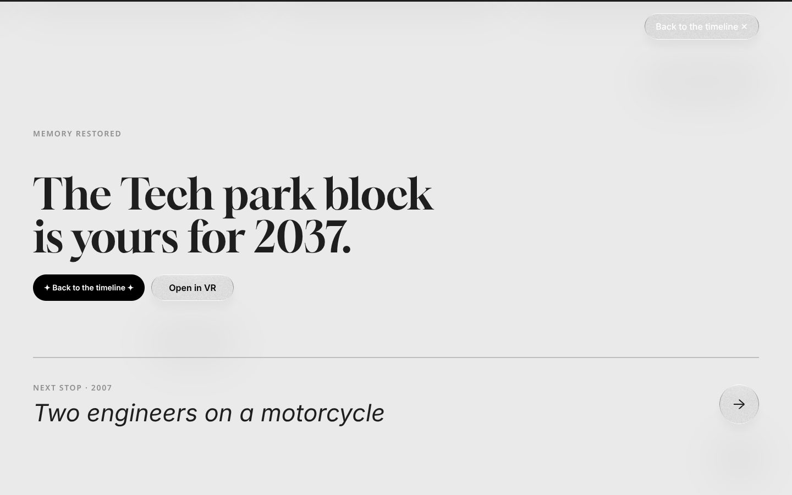
Build the Bengaluru you want
Every stamp you earned becomes a block. Place them on the grid, then View Your Bangalore. The 2037 scene, grey until now, is replaced by your plan in full colour.
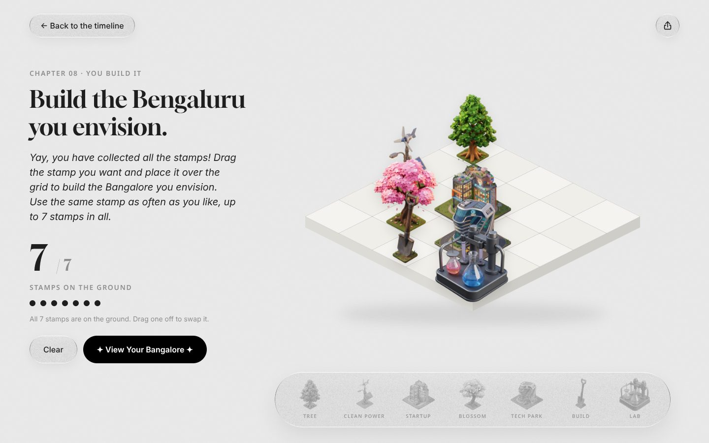
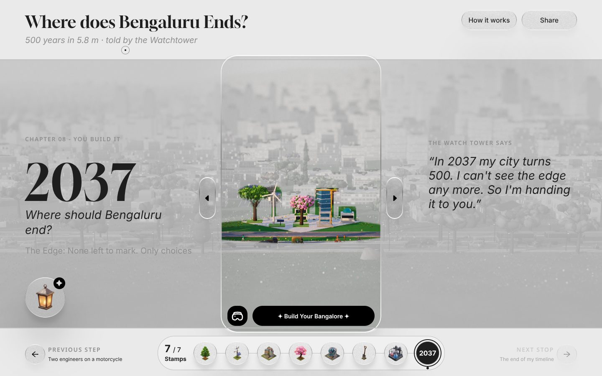
Walk your city in VR
The VR view lets you look around any scene. At 2037 it shows your own city, with a way back to keep building. Exit VR sits in the same top-right spot on every screen.
Tension, resolution, outcome
The screen disappears on a laptop
A smooth slide, no reason to slide
The goal did not add up
The hero object got lost
A tour that skipped itself
A locked button that only said no
The reward felt generic
An assistant that might invent history
AI as a build partner, with me in the loop
An agentic AI workflow took this from research to a working 3D build in a week. The AI generated, coded and checked. I set direction, judged quality and made every design call.
Research synthesis
LLM-assisted desk research, then my own cross-check. The "two or more sources" rule filtered the milestones.
Content strategy
The AI as a sparring partner for the 36 to 8 filters and the narrator's voice. I wrote the rules and picked the stops.
Rapid prototyping
Natural-language prompts became working 2D and 3D prototypes in hours, so I could test feel before polish.
Design in Figma
Wireframes, UI, characters and components, all mine. Figma is the source of truth.
Design to code via MCP
The Figma MCP server gave the coding agent direct access to frames, layout and tokens, so the build matched the design.
Agentic coding
Claude as an AI pair programmer in a cloud workspace: three.js scenes, GSAP motion, states and a single-file build.
Automated visual QA
Headless Chromium rendered the WebGL scenes and took screenshots, so the agent checked its own work before I saw it.
Ship
Each approved change was committed to GitHub with a clear message and published, so every version is traceable.
The review loop
I reviewed the live build like a creative director, pinning comments to exact elements. Each comment became one scoped task. Over 40 loops like this shaped the final build.
- Building and rebuilding versions in hours, not days
- Turning Figma frames into working code
- Catching layout bugs with automated screenshots
- Keeping a clean, versioned history
- The topic, the 8 stops and the story arc
- The lens, the stamps and the 2037 reward
- Every visual, the characters and the voice
- What to cut: Then & Now, extra text, generic visuals
Mr. Lamp, a grounded assistant
Visitors can ask the lantern about the city. In a museum, a wrong answer is worse than no answer, so I designed it as closed-domain question answering with guardrails.
- Knowledge base: my own research document, compiled into the build
- Retrieval: the question is matched to stops, years and topics
- Grounding: answers come only from that document
- Fallback: "I am not aware of it" instead of a guess
Next: an LLM with retrieval-augmented generation (RAG) and citations, plus Kannada, Hindi and voice.
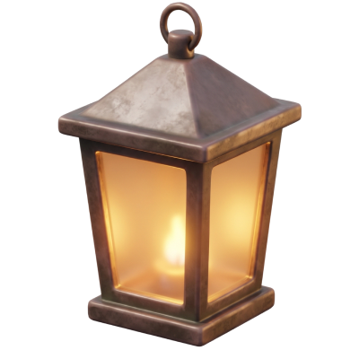
ASK MR. LAMPInteractive recreationThe vocabulary, in plain words
What I delivered, and what I learnt
A live 3D web simulation of the full installation: 8 stops, 7 stamps, story pages, VR and a city builder, in one link.
Research, journey map, 12 wireframes, final UI, characters, stamp set and component states in Figma.
A research and process document that shows every version, decision and trade-off.
Research to a working build in 7 days, with 9 versions explored instead of the usual one or two.
No usability data yet, so I am not claiming metrics. Each version removed a reason for a first-time visitor to get lost, and the test plan below is how I will measure it.
Six things I would tell myself on day one
Start with the physical numbers
Wall size, screen size and stop count decided the whole structure.
Prove the interaction early
A rough slide told me more than any static screen.
Story before visuals
Fixing "7 stamps, build 2037" in wireframes made every later screen easier.
Cut what doesn't add value
Less on screen meant the frame and the memories stood out.
Make the reward feel earned
A reward needs a small action, and an ending that is yours.
AI speeds up iteration, I make the calls
AI let me explore far more in a week. Judgement on what to keep stayed with me.
Test my own bias
I designed it, so I know where everything is. Next, 5 to 6 people who have never seen it will try it with no briefing, thinking aloud.
| Task | What I want to learn |
|---|---|
| Dragging | Do they drag the frame without being told? |
| Stamps | Do they notice they are collecting stamps, and why? |
| L1 to L2 | Can they open a full story and come back? |
| VR icon | Do they recognise it and know what it does? |
| Goal | Can they say what unlocks 2037? |
| Mr. Lamp | Do they find the lantern and ask it something? |
Measures: task success, time on task, wrong clicks, and two questions after: "What was the goal?" and "What did each icon do?"